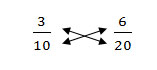

อัตราส่วน
เป็นความสัมพันธ์ที่แสดงการเปรียบเทียบปริมาณสองปริมาณซึ่งอาจมีหน่วยเดียวกันหรือต่างหน่วยกันก็ได้
ร้อยละ มีความหมายต่อร้อยหรือส่วนร้อยมาจากคำในภาษาอังกฤษว่า Percent
หรือใช้สัญลักษณ์เป็น % แทนก็ได้ คำว่า ร้อยละหรือเปอร์เซ็นต์ (%)
เป็นอัตราส่วนแสดงการเปรียบเทียบปริมาณใดปริมาณหนึ่งกับ 100 เช่น
อัตราส่วน
อัตราส่วน เป็นความสัมพันธ์ที่แสดงการเปรียบเทียบปริมาณสองปริมาณซึ่งอาจมีหน่วยเดียวกันหรือต่างหน่วยกันก็ได้
กำหนดให้ a และ b แทนจำนวนสิ่งของที่ต้องการนำมาเปรียบเทียบ เขียนแทนอัตราส่วน a ต่อ b ด้วย a : b หรือ a/b
สัญลักษณ์ a : b หรือ a/b อ่านว่า a ต่อ b
เรียกจำนวน a ในอัตราส่วน a : b ว่า จำนวนแรก หรือ จำนวนที่หนึ่ง
เรียกจำนวน b ในอัตราส่วน a : b ว่า จำนวนหลัง หรือ จำนวนที่สอง
ตำแหน่งของจำนวนในแต่ละอัตราส่วนมีความสำคัญ กล่าวคือ อัตราส่วน a : b ไม่ใช่อัตราส่วนเดียวกับอัตราส่วน b : a ยกเว้น a = b เช่นอัตราส่วนของปริมาณครู 1 คนต่อการดูแลนักเรียน 25 คน เป็น 1 : 25 ไม่ใช่อัตราส่วนเดียวกับ 25 : 1 ทั้งนี้เพราะอัตราส่วน 1 : 25 หมายความว่า ปริมาณครู 1 คน ดูแลนักเรียน 25 คน ในขณะที่ 25 : 1 หมายถึงปริมาณครู 25 คน ดูแลนักเรียน 1 คน
การเขียนอัตราส่วน
การเขียนอัตราส่วน มี 2 ลักษณะ ดังนี้
1. การเปรียบเทียบปริมาณสิ่งของที่มีหน่วยเหมือนกัน การเขียนอัตราส่วนไม่ต้องใส่หน่วยกำกับ เช่น อัตราส่วนของจำนวนนักเรียนต่อจำนวนครูเป็น 25 : 1 หรืออัตราส่วนของจำนวนครูต่อจำนวนนักเรียนเป็น 1 : 25
2. การเปรียบเทียบปริมาณสิ่งของที่มีหน่วยต่างกัน การเขียนอัตราส่วนต้องใส่หน่วยกำกับด้วย เช่น อัตราส่วนของจำนวนไข่ไก่เป็นฟองต่อราคาเป็นบาท เป็น 10 : 25
อัตราส่วนที่เท่ากัน
หลักการหาอัตราส่วนที่เท่ากัน
1. หลักการคูณ
อัตราส่วนใดเมื่อคูณแต่ละจำนวนด้วยจำนวนเดียวกัน โดยที่จำนวนนั้นไม่เท่ากับศูนย์
อัตราส่วนใหม่ที่ได้จะเท่ากับอัตราส่วนเดิม
2. หลักการหาร
อัตราส่วนใดเมื่อหารแต่ละจำนวนด้วยจำนวนเดียวกัน โดยที่จำนวนนั้นไม่เท่ากับศูนย์ อัตราส่วนใหม่ที่ได้จะเท่ากับอัตราส่วนเดิม จากหลักการหาอัตราส่วนที่เท่ากันสามารถเขียนเป็นสัญลักษณ์ได้ดังนี้
อัตราส่วน a : b และ c เป็นจำนวนใดๆ ที่ไม่เท่ากับศูนย์ จะได้ว่า
หลักการคูณ a/b = (a × c)/(b × c)
หลักการหาร a/b = (a ÷c)/(b ÷c)
การตรวจสอบการเท่ากันของอัตราส่วน
การตรวจสอบการเท่ากันของอัตราส่วน สามารถใช้หลักการตรวจสอบได้ดังนี้
1. การตรวจสอบโดยใช้การคูณไขว้
ถ้าต้องการตรวจสอบอัตราส่วน 3/10 กับ 6/20 ว่าเท่ากันหรือไม่
สามารถนำอัตราส่วนทั้งสองมาคูณไขว้กันได้ดังนี้

พิจารณาการคูณของจำนวนแต่ละคู่ตามลูกศร ซึ่งเรียกว่า ผลคูณไขว้ (Cross product)
ถ้าผลคูณไขว้เท่ากันแสดงว่าอัตราส่วนทั้งคู่เท่ากัน แต่ถ้าผลคูณไขว้ไม่เท่ากันแสดงว่าอัตราส่วนทั้งคู่ไม่เท่ากัน
เนื่องจาก 3 × 20 = 60
และ 6 × 10 = 60
จะได้ 3 × 20 = 6 × 10 = 60
ดังนั้น อัตราส่วน 3/10 กับ 6/20 เป็นอัตราส่วนที่เท่ากัน
โดยทั่วไปกล่าวได้ว่า การตรวจสอบการเท่ากันของอัตราส่วน a/b และ c/d โดยใช้การคูณไขว้แล้วพิจารณาผลคูณไขว้ของอัตราส่วน a/b และ c/d ตามหลักการดังนี้
1. ถ้า a × b = b × c แล้ว a/b = c/d
2. ถ้า a × d ≠ b × c แล้ว a/b ≠ c/d
จากหลักการข้างต้น ทำให้ได้ข้อสรุปต่อไปอีกว่า
ถ้า a/b = c/d แล้ว a × b = b × c
2. การตรวจสอบโดยใช้การทอนเป็นอัตราส่วนอย่างต่ำ
ถ้าต้องการตรวจสอบอัตราส่วน 6/9 กับ 14/21 ว่าเท่ากันหรือไม่
ให้นำอัตราส่วนทั้งสองมาทอนเป็นอัตราส่วนอย่างต่ำ ดังนี้
6/9 = (6 ÷3)/(9 ÷3) = 2/3
14/21 = (14 ÷7)/(21 ÷7) = 2/3
พิจารณาจากอัตราส่วนอย่างต่ำของทั้งสองอัตราส่วน จะพบว่า 6/9 กับ 14/21
มีอัตราส่วนอย่างต่ำเท่ากัน แสดงว่า อัตราส่วน 6/9 กับ 14/21 เป็นอัตราส่วนเท่ากัน
แต่ถ้าพิจารณาแล้วพบว่า อัตราส่วนอย่างต่ำสองอัตราส่วนใด ๆ ไม่เท่ากัน แสดงว่า
อัตราส่วนที่นำมาเปรียบเทียบไม่เท่ากัน
อัตราส่วนของจำนวนหลาย ๆ จำนวน
ให้พิจารณาอัตราส่วนต่อไปนี้
จำนวนนักเรียนชายต่อจำนวนนักเรียนหญิงเป็น 13 : 12
จำนวนนักเรียนหญิงต่อจำนวนครูเป็น 12 : 2
จำนวนครูต่อจำนวนนักการภารโรงเป็น 2 : 3
นอกจากการเขียนอัตราส่วนแสดงการเปรียบเทียบจำนวนของบุคคลข้างต้นนั้นทีละคู่ ยังสามารถเขียนอัตราส่วนแสดงการเปรียบเทียบของจำนวนของบุคคลทั้งหมดได้ดังนี้
อัตราส่วนของจำนวนนักเรียนชายต่อจำนวนนักเรียนหญิงต่อจำนวนครูต่อจำนวนนักการภารโรง เป็น 13 : 12 : 2 : 3 อัตราส่วนเช่นนี้เรียกว่า "อัตราส่วนของจำนวนหลายๆจำนวน"
สัดส่วน
จากอัตราส่วนที่เท่ากัน เช่น
3 : 4 = 9 : 12
5/9 = 20/36
แต่ละประโยคข้างต้นแสดงการเท่ากันของอัตราส่วนสองอัตราส่วน
ในทางคณิตศาสตร์ ประโยคที่แสดงการเท่ากันของอัตราส่วนสองอัตราส่วนเรียกว่า สัดส่วน
สัดส่วน a/b = c/d อ่านว่า a ต่อ b เท่ากับ c ต่อ d
ร้อยละ
ในชีวิตประจำวันของนักเรียนมักจะเคยได้ยินหรือพบคำว่า "ร้อยละ" หรือ "เปอร์เซ็นต์" อยู่เสมอ ๆ เช่น ธนาคารแห่งหนึ่งให้ดอกเบี้ยร้อยละ 8.5 ต่อปีและสินค้าลดราคาจากราคาปกติ 50% เป็นต้น
ร้อยละ มีความหมายต่อร้อยหรือส่วนร้อยมาจากคำในภาษาอังกฤษว่า Percent หรือใช้สัญลักษณ์เป็น % แทนก็ได้ คำว่า ร้อยละหรือเปอร์เซ็นต์ (%) เป็นอัตราส่วนแสดงการเปรียบเทียบปริมาณใดปริมาณหนึ่งกับ 100 เช่น
ร้อยละ 75 หรือ 75% แทนด้วย 75 : 100 หรือ 75/100
การเขียนอัตราส่วนให้อยู่ในรูปร้อยละ
การเขียนอัตราส่วนใดให้อยู่ในรูปร้อยละ จะต้องเขียนอัตราส่วนนั้นให้อยู่ในรูปที่จำนวนหลังของอัตราส่วนเป็น 100 แล้วจะได้จำนวนแรกของอัตราส่วนเป็นค่าของร้อยละที่ต้องการ เช่น
7/10 = (7 ×10)/(10 ×10) = 70/100 = 70%
การเขียนร้อยละให้อยู่ในรูปอัตราส่วน
ในทางกลับกัน สามารถเขียนร้อยละให้อยู่ในรูปอัตราส่วนได้ โดยเขียนอัตราส่วนที่มีจำนวนแรกเป็นค่าของร้อยละ และจำนวนหลังเป็น 100 ร้อยละ a หรือ a% เขียนในรูปอัตราส่วนได้ว่า a : 100 หรือ a/100 เช่น
ร้อยละ 45 หรือ 45% เขียนในรูปอัตราส่วนได้ว่า 45 : 100 หรือ 45/100
การคำนวณเกี่ยวกับร้อยละ
การคำนวณเกี่ยวกับร้อยละ ส่วนใหญ่จะพบใน 3 ลักษณะคือ
ตัวอย่างที่ 1 25% ของ 60 เท่ากับเท่าไร
หมายความว่าถ้ามี 25 ส่วน
ใน 100 ส่วน แล้วจะมีกี่ส่วนใน 60 ส่วน
วิธีคิด ให้มี a ส่วนใน 60
ส่วน
เขียนสัดส่วนได้ดังนี้ a/60 =
25/100
จะได้ a x 100 = 60 x 25
a = (60x25)/100
ดังนั้น a = 15
นั่นคือ 25% ของ 60
คือ 15
ตัวอย่างที่ 2 9 เป็นกี่เปอร์เซ็นต์ของ 45
หมายความว่า ถ้ามี 9
ส่วนใน 45 ส่วน แล้วจะมีกี่ส่วนใน 100 ส่วน
วิธีคิด ให้ 9 เป็น X%
ของ 45
x% หมายถึง X/100
เขียนเป็นสัดส่วนได้ดังนี้ 9/45
= x/100
จะได้ 9x100 = 45 x X
x = (9x100)/45
ดังนั้น x = 20
นั่นคือ 9 เป็น 20%
ของ 45
ตัวอย่างที่ 3 8 เป็น 25% ของจำนวนใด
หมายความว่า ถ้ามี 25
ส่วนใน 100 ส่วน แล้วจะมี 8 ส่วนในกี่ส่วน
วิธีคิด ให้ 8 เป็น 25%
ของ m
เขียนเป็นสัดส่วนได้ดังนี้ 8/m
= 25/100
จะได้ 8 x 100 = m x 25
m = (8x100)/25
ดังนั้น m = 32
นั่นคือ 8 เป็น 25% ของ 32